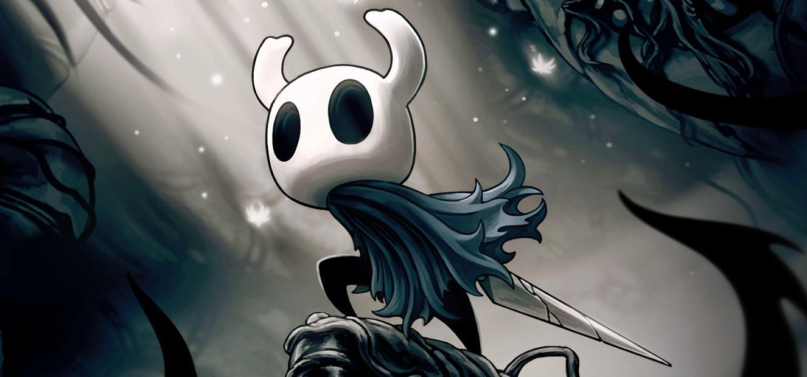
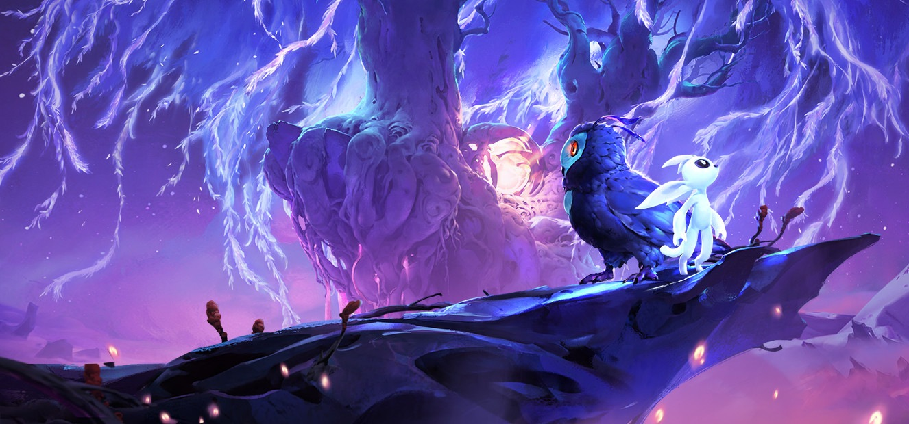

Cartes animées
Chaque carte part de l’illustration Steam du jeu. Les personnages et les éléments proches sont détourés en calques depuis les pixels d’origine, le décor caché derrière eux est reconstruit, puis un shader WebGL compose et anime le tout dans le navigateur. Plus le niveau de la carte monte, plus elle prend vie.
Survole les cartes : la perspective suit la souris.
Les jeux



Chaque page de jeu montre l’original, la version parallaxe et la version entièrement animée.